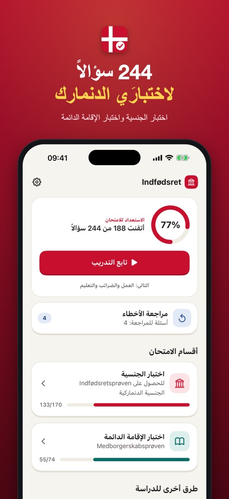
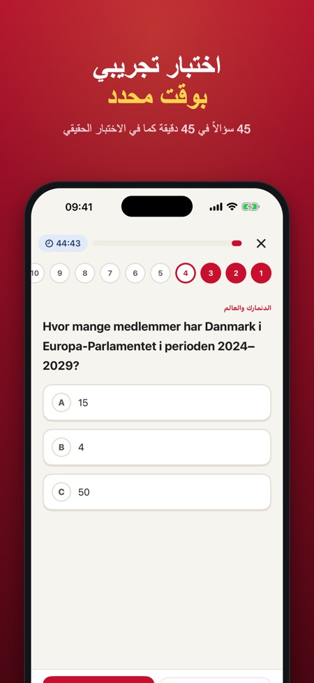
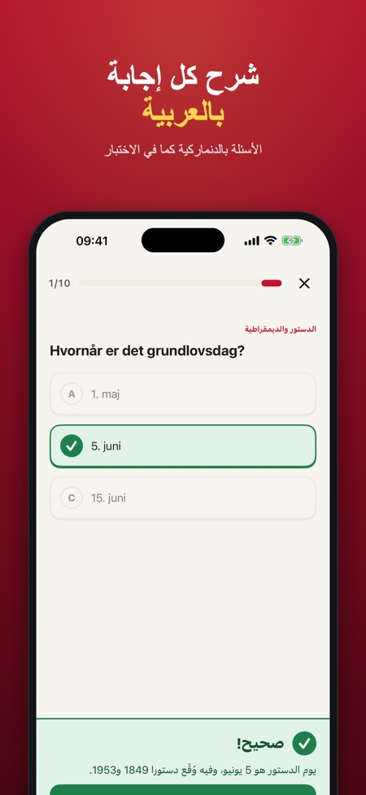

Indfødsretsprøven والإقامة. 244 سؤالًا تدريبيًا للاختبارين الدنماركيين. الأسئلة بالدنماركية والشرح بالعربية. امتحانات تجريبية بوقت محدد وقاعدة 4 من 5 لأسئلة القيم.



استعد لاختبار الجنسية الدنماركية (indfødsretsprøven) واختبار الإقامة الدائمة (medborgerskabsprøven) مع 244 سؤالًا. دفعة واحدة فقط، بلا اشتراك.
الأسئلة بالدنماركية والشرح بالعربية
كما في الاختبار الحقيقي، جميع الأسئلة باللغة الدنماركية. بعد كل إجابة تقرأ سبب صحتها أو خطئها بالعربية (أو بالدنماركية أو الإنجليزية أو الألمانية أو البولندية أو التركية). الواجهة العربية كاملة من اليمين إلى اليسار.
ماذا يتضمن التطبيق
• اختبار الجنسية: 148 سؤالًا عن تاريخ الدنمارك والدستور والديمقراطية والرفاه والمجتمع والثقافة والتقاليد والجغرافيا والدنمارك في العالم
• اختبار الجنسية: 22 سؤالًا عن القيم الدنماركية
• اختبار الإقامة: 74 سؤالًا عن الحياة اليومية والديمقراطية والحقوق والواجبات والعمل والضرائب والتعليم
• امتحانات تجريبية بوقت محدد بالصيغة الرسمية: 45 سؤالًا في 45 دقيقة (النجاح بـ36 إجابة صحيحة و4 على الأقل من أسئلة القيم الخمسة) و25 سؤالًا في 30 دقيقة (النجاح بـ20 إجابة صحيحة)
• تعود إليك أخطاؤك حتى تجيب عنها صحيحًا مرتين متتاليتين
• بعد الامتحان التجريبي لاختبار الجنسية ترى هل أنت فوق حد الأمان 36 من 40 (أسئلة الأحداث الجارية الخمسة لا يمكن التدرب عليها)
• قراءة الأسئلة والإجابات بصوت عالٍ بالدنماركية
• تقدّمك في كل موضوع
• عدّ تنازلي حتى موعد اختبارك وتذكير يومي اختياري
سعر عادل
جرّب موضوعًا واحدًا وامتحانًا تجريبيًا واحدًا في كل اختبار دون شراء. افتح كل شيء بعملية شراء واحدة. بلا اشتراك، بلا إعلانات، بلا حساب. يعمل دون إنترنت.
ملاحظة: 5 أسئلة في اختبار الجنسية عن أحداث جارية ولا يمكن التحضير لها، لذلك يستخدم الامتحان التجريبي في التطبيق أسئلة من المنهج بدلًا منها.
هذا التطبيق مستقل وغير تابع لـ SIRI أو لوزارة التعليم العالي والعلوم أو للحكومة الدنماركية. جميع الأسئلة من تأليفنا استنادًا إلى مواضيع الاختبار المعلنة. الامتحان التجريبي للتدريب فقط، وقد يختلف الاختبار الحقيقي.